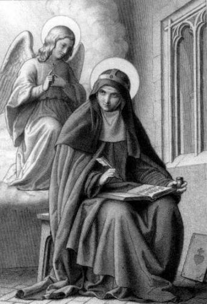

"APRESENTAÇÃO"

A MARAVILHOSA HISTÓRIA DIVINA que terão oportunidade de apreciar, é uma obra notável toda ela dedicada a NOSSA SENHORA, MÃE DE DEUS e Nossa MÃE, um maravilhoso texto repleto de carinho e inflamado de amor, que por ordem de DEUS, o Anjo do SENHOR ditou para Santa Brígida, quando ela se encontrava em Roma. Não tentaremos explicar e nem definir a grandeza da manifestação Angélica, para involuntariamente mesmo querendo ajudar, diminuirmos a suprema intensidade do afeto e o precioso valor das palavras do emissário Divino, que mais se assemelham a um admirável soneto em prosa.
Nesta ocasião, Santa Brígida estava ocupando a Casa dos Cardeais, ao lado da Igreja de São Lourenço, em Damaso, na cidade eterna, e não sabia as orações que deveriam ser rezadas pelas monjas do Mosteiro que fundou na Suécia, por ordem de NOSSO SENHOR JESUS CRISTO. O Mosteiro foi fundado em honra da SANTÍSSIMA VIRGEM MARIA, e cuja Regra, o SENHOR Mesmo havia ditado à Santa. Assim, colocando-se em oração, sem saber o que fazer lhe apareceu JESUS e disse: “Te enviarei o Meu Anjo, o qual te revelará e te ditará as leituras que pela manhã deve ser rezada pelas monjas em teu Mosteiro erigido em honra de Minha MÃE, e tu deverás escrevê-la conforme o Anjo lhe for ditando”.
A Santa tinha em seus aposentos uma pequena janela que dava para o Altar maior, e dela podia ver o Sacrário fechado com JESUS SACRAMENTADO. Neste aposento também tinha uma mesinha e uma cadeira, que lhe permitia escrever depois que fazia as suas orações. Sentada na cadeira permanecia a espera do Anjo, o qual, ao chegar, ficava de pé ao seu lado, e respeitosamente olhando pela pequena janela em direção ao Sacrário, ditava as lições, que deviam ser praticadas pelas religiosas do Mosteiro.
Brígida escrevia com muita devoção tudo o que o Anjo lhe ditava, e no mesmo dia entregava o texto ao seu confessor, a fim de que fosse enviado para a Suécia. No entanto, as vezes o Anjo não aparecia para ditar as orações. Ela então perguntava ao seu confessor, dizendo: “Padre, hoje nada escrevi, porque esperei muito tempo pelo Anjo do SENHOR e ele não veio”. O padre então, providenciava alguns versículos da Sagrada Escritura, para suprir aquela dificuldade, e também eram enviados para Estocolmo, a capital da Suécia.
E assim procedendo, foi composta uma magnífica narrativa em honra da SANTÍSSIMA VIRGEM MARIA, ditado pelo Anjo do SENHOR. Para facilitar o entendimento, o Anjo dividiu o texto em lições, que as religiosas deviam ler pela parte da manhã, durante a semana, repetindo nas semanas seguintes, ao longo do ano, conforme está apresentado nas próximas páginas.
Quando finalmente o Anjo concluiu todo o texto em honra da VIRGEM, disse a Santa Brígida: “Já alinhavei a túnica da Rainha do Céu, a MÃE DE DEUS, agora, é a vez de você e as irmãs a costurarem com dignidade”. E a seguir, mandou o seguinte recado para as irmãs na Suécia:“Portanto, ditosas monjas religiosas do Santíssimo Salvador, cuja Regra JESUS lhes deu, através de sua Esposa (Santa Brígida), serva tão benigna e humilde a vocês e ao mundo, assim, vos preparai para receber santamente e com grande reverencia e devoção este Sagrado POEMA DIVINO, que por ordem de DEUS foi ditado por mim a vossa mãe Santa Brígida”. “Aplicai os vossos ouvidos para ouvir tão sublime e inaudito louvor a SANTÍSSIMA VIRGEM MARIA, e meditai com o coração humilde a sua excelência, manifestada nele desde a eternidade, a fim de que considerando atenciosamente, possam perceber a sua doçura com o prazer da contemplação. Depois alçai a DEUS, com todo o vosso afeto, as vossas mãos e o vosso coração, para lhe dar humildes e devotas ações de graças pelo extraordinário favor dispensado pelo VOSSO SANTÍSSIMO FILHO, o Rei dos Anjos, que com Sua Divina MÃE, vive e Reina sempre pelos séculos dos séculos. Amém”.